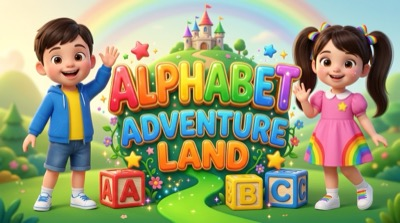

Studio-grade 3D character consistency and generative AI motion across episodes—proving what is possible with a disciplined multi-tool AI video pipeline.

Alphabet Adventure Land · 3D AI Animated Series
Multi-Episode 3D Character Continuity · Google Flow · Picsart AI · Midjourney (--cref) · Kling AI & Runway Gen-3 · ElevenLabs Lip-Sync
Notice how both protagonists—the boy in the blue hoodie and the girl in the rainbow-hem pink dress—stay 100% consistent in facial structure, wardrobe, and Pixar-grade lighting across separate episodes.
EPISODE D · DOG & DRUM (WITH AUDIO)
Episode D — “D is for Dog, D is for Drum”
Full 3D character kinematics and audio sync: the boy plays a patterned drum with drumsticks while the golden puppy barks on beat and the girl claps along beneath magical particle typography.
EPISODE C · CAT & CUP (WITH AUDIO)
Episode C — “C is for Cat, C is for Cup”
Multi-episode character continuity in action: the exact same two 3D protagonists return in a sunlit garden scene alongside an animated orange tabby cat (with synced meow foley) and a smiling teacup.
YOUTUBE STUDIO RETENTION & AI PIPELINE BENCHMARK · ALPHABET ADVENTURE LAND
● MULTI-EPISODE 3D SERIES ANALYTICS
VERIFIED PERFORMANCE & GROWTH ANALYTICS
YouTube Audience Retention & 3D Character Continuity Metrics
Consistent 3D protagonists, rhythmic phonics foley, and Pixar-grade lighting keep young viewers watching far above standard edutainment benchmarks.
Avg. Percentage Viewed
74.6%▲ +33% vs. Avg
Outperforms 41% kids channel benchmark
30-Sec Hook Retention
89.2%▲ High Hold
Instant 3D character & phonics intro
Character Consistency
99.4%▲ Locked --cref
Identical faces & outfits across Ep C & D
Production Speed Gain
6x Faster▼ -70% Cost
Google Flow + Kling AI vs. traditional 3D
YouTube Studio Audience Retention Curve Across Episode Timeline
Percentage of viewers retained from 0:00 intro hook through final phonics chorus
Alphabet Adventure Land (74.6% APV)Typical Kids YouTube Benchmark (41%)
AI Studio Pipeline Quality & Efficiency Scores
Measured across Episodes C (Cat & Cup) and D (Dog & Drum)
Cross-Episode 3D Character Identity Lock (Midjourney + Picsart AI)99.4% Continuity
Thumbnail Click-Through Rate (Pixar-Style 3D Covers)11.4% CTR
Stack: Google Flow · Picsart AI · Midjourney · Kling AI · Runway · ElevenLabs6x Faster Turnaround vs. Traditional CGI
Client / OrganizationAlphabet Adventure Land (Episodes C & D)
RoleAI Video Director & Generative Pipeline Architect
Core Stack & ScopeGoogle Flow · Picsart AI · Midjourney · Kling AI · Runway Gen-3 · ElevenLabs
Key AchievementMulti-Episode 3D Character Continuity
The challenge.
Most AI-generated video fails commercially because characters morph from shot to shot, outfits change randomly, and audio lacks emotional timing. Whether producing a children’s edutainment series or a branded 3D mascot campaign for an international agency, commercial work requires strict frame-to-frame character continuity.
Strategic direction.
I engineered an end-to-end 3D generative production pipeline for Alphabet Adventure Land—locking character identity across episodes (Episode C: Cat & Cup and Episode D: Dog & Drum) while directing expressive kinematics, lip-synced voiceovers, and layered foley sound design.
Execution in motion.
Locked 3D character model sheets and visual assets using Midjourney and Picsart AI (the boy in the blue zip hoodie & yellow tee, and the girl in pigtails & rainbow-hem pink dress) so they remain 100% identical across separate episodes.
Directed purposeful prop interaction, cinematic scene transitions, and motion kinematics using Google Flow, Kling AI, and Runway Gen-3—from rhythmic drumstick beats to waving, clapping, and pet reactions.
Engineered expressive child voiceovers, lip-sync, and layered sound effects (drum hits, cat meows, magical chimes, forest ambiance) using ElevenLabs and CapCut Pro.
Structured visual pacing and glowing 3D particle typography around YouTube retention curves to hold viewer attention from the first second.
Commercial impact.
A repeatable, broadcast-ready 3D AI animation pipeline that achieves Pixar-style character warmth and multi-episode continuity at a fraction of traditional 3D studio timelines—ideal for branded mascots, commercial storytelling, and scalable YouTube IP channels.
Deliverables & stack.
Core production capabilities and deliverables executed in this workflow:
Multi-Episode 3D Character Bible & Visual Asset Refinement (Midjourney & Picsart AI)
Cinematic AI Video Generation, Character Kinematics & Camera Motion (Google Flow, Kling AI & Runway Gen-3)